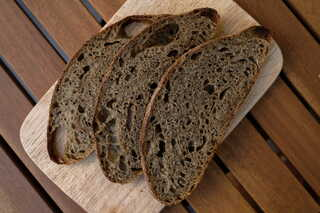

Vegane Sauerteig-Croissants
Vegane Croissants? Croissants mit Sauerteig? Vegane Sauerteig-Croissants! Wie ich es zuvor mit dem veganen Sauerteig-Brioche getan habe, wage ich mal wieder eine spezielle Kombination. Vegane Croissants habe ich schon öfter gemacht und mit der veganen Butter Alsan (Bio) sehr gute Erfahrungen gemacht. An Sauerteig Croissants habe ich mich bisher noch nicht herangetraut, da man die Fermentation genaustens kontrollieren muss, damit die Croissants locker werden und die tollen Schichten bilden. Daher ist, wie bei jedem meiner Rezepte, ein sehr aktiver und mild geführter (d.h. eher warme Temperaturen und kurze Abstände, ca. 5 Stunden, zwischen den Fütterungen) Sauerteig wichtig. Außerdem ist, wie ich festgestellt habe, die Herstellung eines Plunderteigs garnicht so aufwändig, vergleichbar mit der eines Sauerteig-Brotes. Das nachfolgende Rezept ist angelehnt an dieses Rezept. Der ganze Prozess dauert etwa 48 Stunden.

Hanf-Dinkelbrot
Dieses Rezept hat eine ganz besondere Zutat: Hanfmehl. Bei der Herstellung von Hanföl oder anderen Nuss- oder Saatenölen bleibt eine entölte Masse zurück, die meistens Abfall ist. Allerdings läss t sich diese Masse trocknen. Das daraus entstehende Mehl ist durchaus sehr gesund und proteinreich. In diesem Brot habe ich entöltes Hanfmehl verwendet, Kürbismehl, Mandelmehl, Leinmehl oder ähnliches k ann auch wunderbar in diesem Rezept verwendet werden. Trotz der eher kleinen Menge verleiht das Nussmehl dem Brot eine interessante Färbung und einen nussigen Geschmack.
Die Zubereitung ähnelt dem Kartoffel-Sauerteigbrot, das Brot ist also innerhalb eines Vormittags gebacken. Vorraussetzung ist ein sehr aktiver Sauerteig und ein warmer Platz, an dem der Teig gehe n kann. Das Brot kann mit Dinkel oder mit Weizen zubereitet werden.
Focaccia mit Sauerteigresten
Beim Füttern des Sauerteiges bleibt immer eine kleine Menge alter Sauerteig übrig, der nicht mehr für die neue Kultur benötigt wird, aber natürlich auch nicht weggeschmisse werden sollte. Daher sammle ich den alten Sauerteig in einem Glas im Kühlschrank und wenn eine geeignete Menge zusammengekomme ist, verarbeite ich ihn unterschiedlichen Gebäcken, wo es nicht unbedingt auf den perfekten Reifegrad des Sauerteigs ankommt. Heute habe ich daraus leckeres Focaccia gebacken. Die Zubereitung ist zudem sehr einfach: Alle Zutaten zu einem weichen Teig verkneten, in die Backform gegeben und im 24-48 Stunden Kühlschrank aufgehen lassen. Optimalerweise ist bei den Sauerteigresten auch junger, also 1-2 Tage alter Sauerteig dabei, da dieser die nötige Triebkraft hat.

Schnelles Sauerteigbrot mit Kartoffel
Bei diesem Rezept kommt es auf die Temperatur an. Sowohl Gare des Sauerteig, Stockgare als auch Stückgare finden bei 27 Grad statt. Dafür geht der Teig recht schnell auf. Wer also reifes Anstellgut parat hat und heute ein Brot braucht, für den ist dieses Rezept perfekt.
Für die Regelung der Temperatur verwende ich eine Fermentierbox. Dies ist nicht zwingend notwendig, ermöglicht mir aber, auf einfache Weise eine konstante, genaue Temperatur zu halten. Alternativ kann der Ofen mit eingeschalteter Lampe verwendet werden. Hierbei am Besten mit einem Termometer die Temperatur überprüfen. Ist der Ofen zu kalt, für ein paar Minuten kurz Heißluft oder Umluft auf 50 Grad einschalten, bis die gewünschte Temperatur erreicht ist. Ist der Ofen zu warm (er sollte nicht wärmer als 30 Grad sein!), kurz die Ofentür öffnen.
Das Rezept richtet sich nach diesem Rezept.

Weizenvollkornbrot mit Sauerteig
Ich backe fast ausschließlich Vollkornbrote. Allerdings gibt es bei Vollkornbroten einige Schwierigkeiten, die nur mit viel Erfahrung und Ausprobieren zu meistern sind. Zum einen übergären Vollkornteige sehr schnell, da in der Schale des Korns Enzyme enthalten sind, die die Fermentierung beschleunigen. Desweiteren haben die Schalenanteile des Vollkornmehls so scharfe Kanten (auch bei sehr fein gemahlemen Vollkornmehl), dass sie die Glutenstruktur, die man so mühsam durch dehnen und falten aufgebaut hat, einfach durchschneidet.
Eine einfache Lösung ist es, die Schalenanteile herauszusieben, da diese größtenteils nicht so fein sind wie die Mehlanteile. Es wäre allerdings schade, nicht nur wegen des Abfalls, sondern auch aufgrund der in den Schalen enthaltenen Nährstoffe, die das Vollkornmehl so gesund machen, die Schalenanteile einfach nicht zu verbacken.

Reine Roggenbrötchen
Sonntags gibt es bei uns immer selbst gebackene Brötchen. Wir mögen gerne Brezeln oder Bagel, aber auch einfachere Brötchen wie diese Roggenbrötchen kommen bei uns häufig auf dem Tisch. Zu diesen Brötchen passen Nussmus und Marmelade ausgezeichnet, aber auch herzhafte Beläge wie Hummus oder Bohnendip passen sehr gut.
Das Rezept besteht aus 100% Roggenvollkornmehl. Wer dieses nicht zur Hand hat oder lieber etwas lockerere Brötchen haben möchte, kann auch Roggenmehl Type 1150 verwenden. Alternativ kann das Roggenvollkornmehl auch gesiebt werden, um ein Auszugsmehl zu erhalten. Die ausgesiebte Kleie kann dann zum Formen der Brötchen verwendet werden.

Sauerteig Pizza
Gute Pizza braucht Zeit. Je länger ein Pizzateig ruht, desto intensiver ist der Geschmack und desto besser geht der Teig im Ofen auf. Gute Pizza braucht außerdem sehr viel Hitze. Wer einen Holz- oder Pizzaofen hat, ist zu beneiden; denn in diesen kann Pizza in 90 Sekunden gebacken werden und ist dementsprechend super saftig, weder Zutaten noch Teig haben Zeit, auszutrocknen, außerdem wird die Pizza dann von unten knusprig und bekommt von oben das berühmte Leopartenmuster, das man von der Pizza des Lieblingsitalieners kennt. Leider haben die meisten keinen Pizzaofen, aber man kann sich ganz gut mit einem Pizzastahl oder -stein aushelfen.

English Muffins
English Muffins sind ein beliebtes Gebäck in den USA, die, wie der Name bereits verrät, ihren Ursprung in der UK haben. Dort werden sie einfach Muffins genannt. Es handelt sich um ein kleines, rundes Gebäck, das oftmals in der Pfanne ausgebacken wird und aufgeschnitten mit Belägen wie Butter und Ei serviert wird. Das machen wir natürlich nicht, denn uns schmecken die English Muffins mit Marmelade am besten.

Weizenvollkornbrot mit Roggen und Sauerteig
Heute habe ich ein Weizenvollkornbrot mit Roggen gebacken. Das Brot ist locker und luftig, und durch den Roggen sehr saftig und bleibt lange frisch. Das Brot ist durch die lange Gare sehr mild, der Roggen verleiht dem Brot einen besonderen Geschmack.